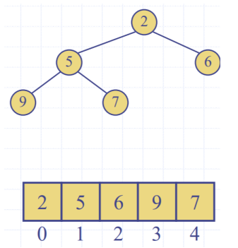

Tutorial 6
Priority Queues
- Queue but first one out is highest priority (lowest key value)
- Each entry:
- Key: The priority, 0 is the highest priority, 1 is the next
- Value: The value of the element
- Uses auxiliary comparator to compare keys
Array Implementation
For a sorted list:
- insertion takes , worst case we insert in the end
- RemoveMin is
For an unsorted list:
- insertion is
- removeMin is
Heaps
- Complete binary tree
- Note to student: consider heap height properties
Heap Order
- The Parent is of higher priority than the child
key(v) >= key(parent(v))
Last node
- Is the lastmost node of the lowest level
Insert into a Heap
- Insert at location z, the new last node
- Restore heap order (up heap)
- keep on swapping with parent until heap order is restored
RemoveMin for a heap
- Swap root node with the last node
- remove the last node (which used to be the root node)
- Restore heap order (perform down heap operation)
- swap with child nodes (either left or right) until heap order is maintained
- peformed in time
Array Based Heap implementation
- n nodes in an array
- For rank
- Left child
- Right child:
- Insert: at index n
- Remove:

Heap sort
- For times:
- Create a Max Heap
- Max Heap: Parent priority < Child priority
- Swap root (largest number/lowest priority) with last node
- Remove last node (the largest number)
- Down heap to restore Max Heap Order Performance: i.e. performing the uphead for elements times
Heap construction
- For n nodes in a heap (n times)
- Insert into a node
- Upheap
Given two heaps A and B,
- add a node as the root
- Downheap to restore heap order

- run time